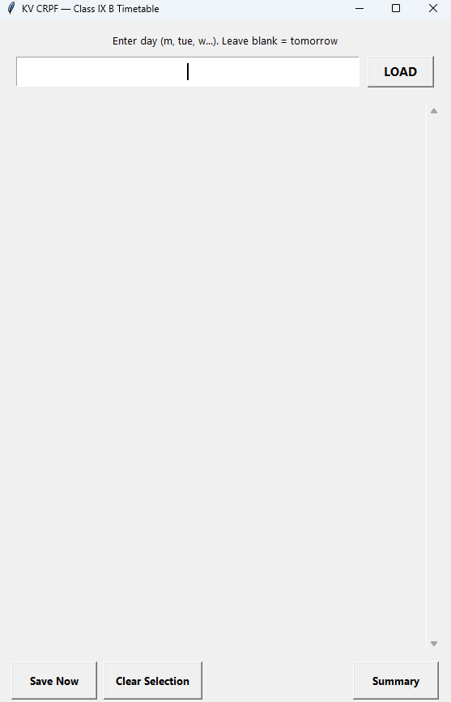
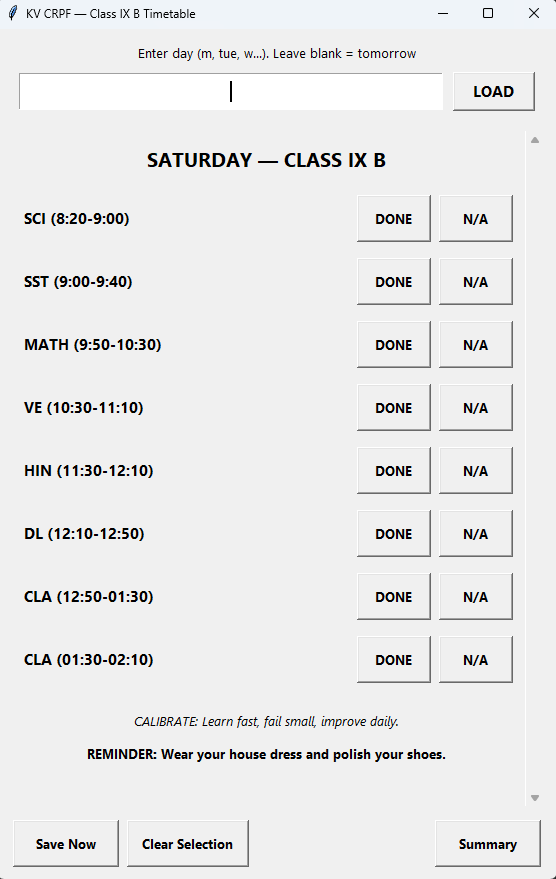
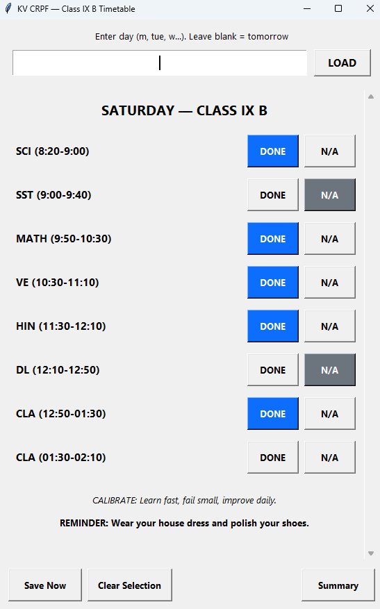
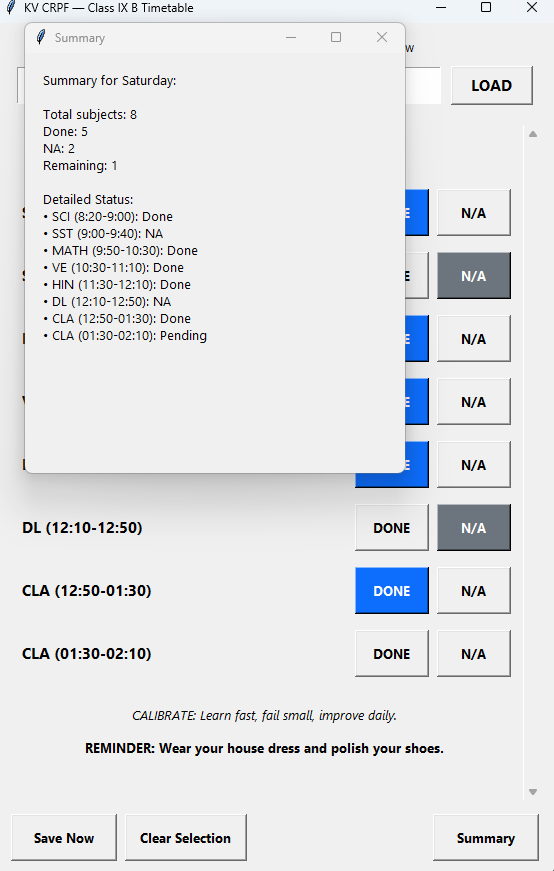

Item 001
Study Assistant
The Study Assistant is a desktop timetable and academic planning tool designed to help students manage class routines, review progress, and stay organized during the week.
Built using Python and Tkinter, the project is simple, focused, and practical for school use. It lets the user load a weekday, review the timetable, and mark each subject as done or not applicable.
The application saves progress between sessions and keeps a clean daily layout for quick academic tracking. It also includes motivational reminders and structured support for better study discipline.
Visuals




Python Code
"""
KV CRPF Class IX B Timetable GUI
Windows Screen Compatible — Large Buttons & High-Visibility UI
"""
import tkinter as tk
from tkinter import messagebox
from datetime import date, timedelta, datetime
import json, os, random
TIMETABLE = {
"Monday": [
"SCI (8:20-9:00)", "SST (9:00-9:40)", "MATH (9:50-10:30)",
"GAME (10:30-11:10)", "HIN (11:30-12:10)", "ENG (12:10-12:50)",
"LIB (12:50-01:30)", "DL (01:30-02:10)"
],
"Tuesday": [
"SCI (8:20-9:00)", "SST (9:00-9:40)", "MATH (9:50-10:30)",
"ART (10:30-11:10)", "HIN (11:30-12:10)", "ENG (12:10-12:50)",
"VE (12:50-01:30)", "VE (01:30-02:10)"
],
"Wednesday": [
"SCI (8:20-9:00)", "SST (9:00-9:40)", "MATH (9:50-10:30)",
"IDA (10:30-11:10)", "ART (11:30-12:10)", "ENG (12:10-12:50)",
"SKT/ASM (12:50-01:30)", "MATH (01:30-02:10)"
],
"Thursday": [
"SCI (8:20-9:00)", "SST (9:00-9:40)", "MATH (9:50-10:30)",
"GAME (10:30-11:10)", "HIN (11:30-12:10)", "ENG (12:10-12:50)",
"SKT/ASM (12:50-01:30)", "SCI (01:30-02:10)"
],
"Friday": [
"SCI (8:20-9:00)", "ART (9:00-9:40)", "MATH (9:50-10:30)",
"GAME (10:30-11:10)", "HIN (11:30-12:10)", "ENG (12:10-12:50)",
"SKT/ASM (12:50-01:30)", "IDA (01:30-02:10)"
],
"Saturday": [
"SCI (8:20-9:00)", "SST (9:00-9:40)", "MATH (9:50-10:30)",
"VE (10:30-11:10)", "HIN (11:30-12:10)", "DL (12:10-12:50)",
"CLA (12:50-01:30)", "CLA (01:30-02:10)"
]
}
REMINDERS = {
"Wednesday": "REMINDER: Wear your house dress and polish your shoes.",
"Saturday": "REMINDER: Wear your house dress and polish your shoes."
}
MOTIVATIONS = [
"STEEL HEART: The world breaks the weak — you are unbreakable.",
"NO EXCUSES: Small actions today decide the battles of tomorrow.",
"FORGE YOURSELF: Discipline is your hammer; consistency the anvil.",
"MISSION CRITICAL: Train in silence, let results make the noise.",
"IRON WILL: When others stop, you keep moving — that is victory.",
"UNSTOPPABLE: Build momentum in little wins. They compound.",
"ZERO RETREAT: Your path is forward; surrender is not an option.",
"BATTLE READY: Be sharper than yesterday. That alone wins wars.",
"RELENTLESS: The grind is ugly. The trophy is clean. Do the ugly work.",
"CALIBRATE: Learn fast, fail small, improve daily."
]
SESSION_FILE = "kv_timetable_status.json"
DAY_ALIASES = {
"m": "Monday", "mon": "Monday", "monday": "Monday",
"t": "Tuesday", "tu": "Tuesday", "tue": "Tuesday", "tuesday": "Tuesday",
"w": "Wednesday", "wed": "Wednesday", "wednesday": "Wednesday",
"th": "Thursday", "thu": "Thursday", "thursday": "Thursday",
"f": "Friday", "fri": "Friday", "friday": "Friday",
"sat": "Saturday", "s": "Saturday", "saturday": "Saturday",
"su": "Sunday", "sun": "Sunday", "sunday": "Sunday"
}
def parse_day_input(txt):
txt = (txt or "").strip().lower()
if txt == "" or txt in ("tomorrow", "tmrw"):
return (date.today() + timedelta(days=1)).strftime("%A")
return DAY_ALIASES.get(txt)
def load_session():
if os.path.exists(SESSION_FILE):
try:
with open(SESSION_FILE, "r") as f:
return json.load(f)
except Exception:
return {}
return {}
def save_session(session):
try:
with open(SESSION_FILE, "w") as f:
json.dump(session, f, indent=2)
except Exception as e:
print("Save error:", e)
session = load_session()
def get_status(day, subject):
return session.get("statuses", {}).get(day, {}).get(subject)
def set_status(day, subject, value):
if "statuses" not in session:
session["statuses"] = {}
if day not in session["statuses"]:
session["statuses"][day] = {}
if value is None:
session["statuses"][day].pop(subject, None)
else:
session["statuses"][day][subject] = value
session["last_day"] = day
session["last_saved"] = datetime.now().isoformat()
save_session(session)
# Window Setup
root = tk.Tk()
root.title("KV CRPF — Class IX B Timetable")
screen_w = root.winfo_screenwidth()
screen_h = root.winfo_screenheight()
win_w = min(560, max(420, int(screen_w * 0.4)))
win_h = min(850, max(600, int(screen_h * 0.8)))
root.geometry(f"{win_w}x{win_h}+{int((screen_w-win_w)/2)}+{int((screen_h-win_h)/2)}")
root.minsize(400, 550)
top_frame = tk.Frame(root)
top_frame.pack(fill="x", pady=(12, 6), padx=12)
lbl = tk.Label(top_frame, text="Enter day (m, tue, w...). Leave blank = tomorrow", fg="black", font=("Segoe UI", 10))
lbl.pack(anchor="center")
entry_frame = tk.Frame(top_frame)
entry_frame.pack(fill="x", padx=10, pady=8)
day_entry = tk.Entry(entry_frame, justify="center", font=("Segoe UI", 12))
day_entry.pack(side="left", fill="x", expand=True, ipady=6)
day_entry.focus_set()
load_btn = tk.Button(entry_frame, text="LOAD", width=8, font=("Segoe UI", 11, "bold"), relief="raised")
load_btn.pack(side="left", padx=(10, 0), ipady=2)
# Scrollable Frame Area
container = tk.Frame(root)
container.pack(fill="both", expand=True, padx=12, pady=6)
canvas = tk.Canvas(container, highlightthickness=0)
scrollbar = tk.Scrollbar(container, orient="vertical", command=canvas.yview, width=20)
inner_frame = tk.Frame(canvas)
def _on_canvas_configure(event):
canvas.itemconfig(canvas_window, width=event.width)
canvas_window = canvas.create_window((0, 0), window=inner_frame, anchor="nw")
canvas.bind("", _on_canvas_configure)
inner_frame.bind("", lambda e: canvas.configure(scrollregion=canvas.bbox("all")))
canvas.configure(yscrollcommand=scrollbar.set)
canvas.pack(side="left", fill="both", expand=True)
scrollbar.pack(side="right", fill="y")
def _on_mousewheel(event):
canvas.yview_scroll(int(-1 * (event.delta / 120)), "units")
canvas.bind_all("", _on_mousewheel)
bottom_frame = tk.Frame(root)
bottom_frame.pack(fill="x", pady=(8, 12), padx=12)
save_btn = tk.Button(bottom_frame, text="Save Now", font=("Segoe UI", 10, "bold"), height=2, width=12)
save_btn.pack(side="left", padx=4)
clear_btn = tk.Button(bottom_frame, text="Clear Selection", font=("Segoe UI", 10, "bold"), height=2, width=14)
clear_btn.pack(side="left", padx=4)
summary_btn = tk.Button(bottom_frame, text="Summary", font=("Segoe UI", 10, "bold"), height=2, width=12)
summary_btn.pack(side="right", padx=4)
widget_refs = {}
def clear_inner():
for w in inner_frame.winfo_children():
w.destroy()
widget_refs.clear()
def center_pack(widget, **kwargs):
widget.pack(anchor="center", **kwargs)
def build_title(day):
title = tk.Label(inner_frame, text=f"{day.upper()} — CLASS IX B", font=("Segoe UI", 15, "bold"), fg="black")
center_pack(title, pady=(10, 12))
def make_subject_row(day, subject):
frame = tk.Frame(inner_frame)
frame.pack(fill="x", padx=8, pady=8)
frame.grid_columnconfigure(0, weight=1)
lbl = tk.Label(frame, text=subject, font=("Segoe UI", 11, "bold"), anchor="w", fg="black")
lbl.grid(row=0, column=0, sticky="w", padx=4)
btn_frame = tk.Frame(frame)
btn_frame.grid(row=0, column=1, sticky="e")
default_bg = tk.Button(btn_frame).cget("bg")
default_fg = "black"
# Scaled Up Buttons
done_btn = tk.Button(btn_frame, text="DONE", width=8, height=2, font=("Segoe UI", 10, "bold"), cursor="hand2")
na_btn = tk.Button(btn_frame, text="N/A", width=8, height=2, font=("Segoe UI", 10, "bold"), cursor="hand2")
def select_done():
current = get_status(day, subject)
if current == "Done":
set_status(day, subject, None)
done_btn.config(bg=default_bg, fg=default_fg)
else:
set_status(day, subject, "Done")
done_btn.config(bg="#0d6efd", fg="white")
na_btn.config(bg=default_bg, fg=default_fg)
def select_na():
current = get_status(day, subject)
if current == "NA":
set_status(day, subject, None)
na_btn.config(bg=default_bg, fg=default_fg)
else:
set_status(day, subject, "NA")
na_btn.config(bg="#6c757d", fg="white")
done_btn.config(bg=default_bg, fg=default_fg)
done_btn.config(command=select_done)
na_btn.config(command=select_na)
done_btn.pack(side="left", padx=4)
na_btn.pack(side="left", padx=4)
existing = get_status(day, subject)
if existing == "Done":
done_btn.config(bg="#0d6efd", fg="white")
elif existing == "NA":
na_btn.config(bg="#6c757d", fg="white")
widget_refs.setdefault(day, {})[subject] = {"done": done_btn, "na": na_btn}
def load_timetable_for_day(day):
if day not in TIMETABLE:
messagebox.showerror("Invalid Day", "That day is not recognized or no classes scheduled.")
return
clear_inner()
build_title(day)
subjects = TIMETABLE[day]
if not subjects:
lbl = tk.Label(inner_frame, text="No classes scheduled. Enjoy your day off!", fg="black", font=("Segoe UI", 12))
center_pack(lbl, pady=18)
else:
for subject in subjects:
make_subject_row(day, subject)
mot = random.choice(MOTIVATIONS)
mot_lbl = tk.Label(inner_frame, text=mot, fg="black", wraplength=win_w-80, justify="center", font=("Segoe UI", 10, "italic"))
center_pack(mot_lbl, pady=(18, 6))
if day in REMINDERS:
rem = tk.Label(inner_frame, text=REMINDERS[day], fg="black", wraplength=win_w-80, justify="center", font=("Segoe UI", 10, "bold"))
center_pack(rem, pady=(4, 14))
session["last_day"] = day
save_session(session)
def on_load_click(event=None):
txt = day_entry.get()
day = parse_day_input(txt)
if not day:
messagebox.showerror("Invalid input", "Could not understand day. Use short codes like m, tue, w, th, f, sat, or leave blank for tomorrow.")
return
load_timetable_for_day(day)
def save_now():
session["last_saved"] = datetime.now().isoformat()
save_session(session)
messagebox.showinfo("Saved", "Selection saved.")
def clear_selection():
day = session.get("last_day")
if not day:
messagebox.showwarning("No day", "Load a day first to clear its selections.")
return
confirm = messagebox.askyesno("Clear", f"Clear all selections for {day}?")
if not confirm:
return
if session.get("statuses", {}).get(day):
session["statuses"][day] = {}
refs = widget_refs.get(day, {})
for subj, buttons in refs.items():
buttons["done"].config(bg=buttons["done"].master.cget("bg"), fg="black")
buttons["na"].config(bg=buttons["na"].master.cget("bg"), fg="black")
save_session(session)
messagebox.showinfo("Cleared", f"Selections for {day} cleared.")
def show_summary():
day = session.get("last_day")
if not day:
messagebox.showwarning("No day", "Load a day first to see summary.")
return
statuses = session.get("statuses", {}).get(day, {})
total = len(TIMETABLE.get(day, []))
done_count = sum(1 for v in statuses.values() if v == "Done")
na_count = sum(1 for v in statuses.values() if v == "NA")
not_done = total - (done_count + na_count)
text = f"Summary for {day}:\n\nTotal subjects: {total}\nDone: {done_count}\nNA: {na_count}\nRemaining: {not_done}\n\nDetailed Status:\n"
for subj in TIMETABLE.get(day, []):
text += f"• {subj}: {statuses.get(subj, 'Pending')}\n"
win = tk.Toplevel(root)
win.title("Summary")
win.geometry(f"380x420+{root.winfo_x()+30}+{root.winfo_y()+30}")
tk.Label(win, text=text, justify="left", fg="black", font=("Segoe UI", 10), padx=16, pady=16).pack(anchor="w")
load_btn.config(command=on_load_click)
save_btn.config(command=save_now)
clear_btn.config(command=clear_selection)
summary_btn.config(command=show_summary)
root.bind("", on_load_click)
if session.get("last_day"):
try:
load_timetable_for_day(session["last_day"])
except Exception:
pass
root.mainloop()